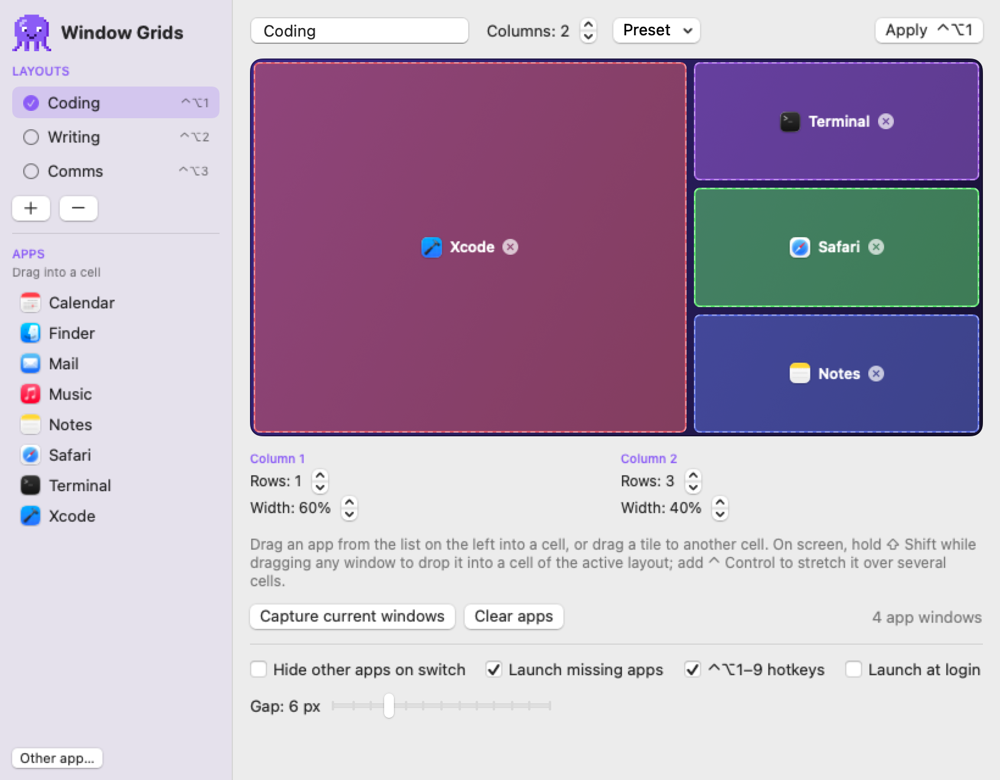
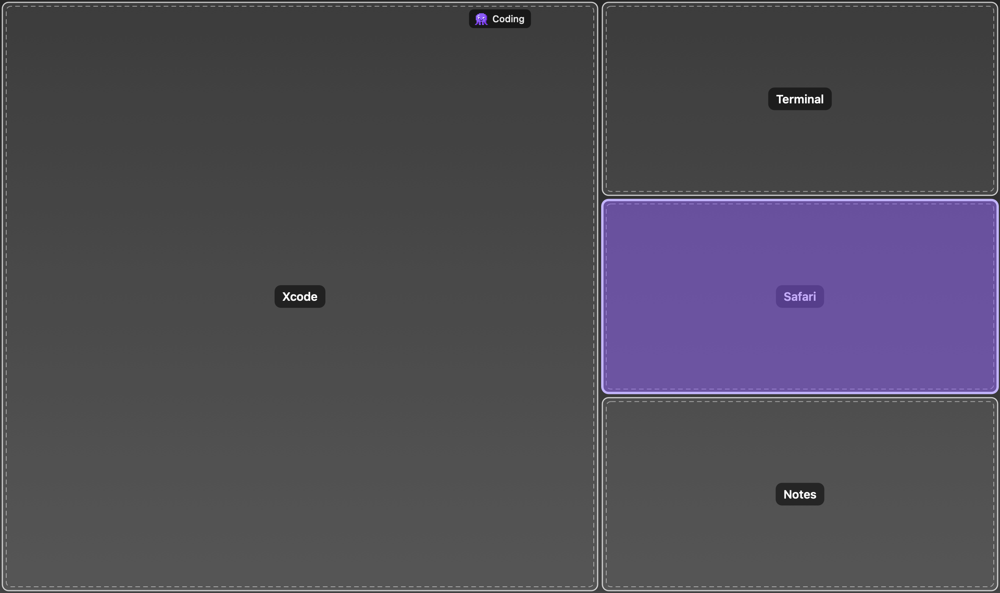

Snap windows into grids. Switch layouts in one keystroke.
A small macOS menu bar app that arranges app windows on a grid, remembers which app goes in which cell, and swaps whole arrangements with a hotkey.


What it does
Flexible grids
Every column has its own width and its own number of rows: a half next to three rows, a wide main area with a narrow stack, or a plain 3 × 2.
Drag apps into cells
Drop running apps onto cells in the editor, or drag a tile to move it.
Shift-drag any window
Hold Shift while dragging a window and the grid appears. Drop on a cell and it snaps. Add Control to span several cells.
Saved layouts
Each layout remembers its grid and its apps. Make one for coding, one for writing, one for calls.
Instant switching
⌃⌥1 … ⌃⌥9 moves every app to its cell and launches the ones that are not running.
Capture
Snap everything currently on screen to the nearest cells and store it as a layout.
Permissions
macOS requires Accessibility access for any app that moves other apps' windows. Window Grids asks for it on first launch (System Settings → Privacy & Security → Accessibility) and uses it only to read and set window positions and sizes.
Support
Questions, bugs and ideas go to the issue tracker on GitHub. The app is free and open source under the MIT license; requires macOS 14 or later.